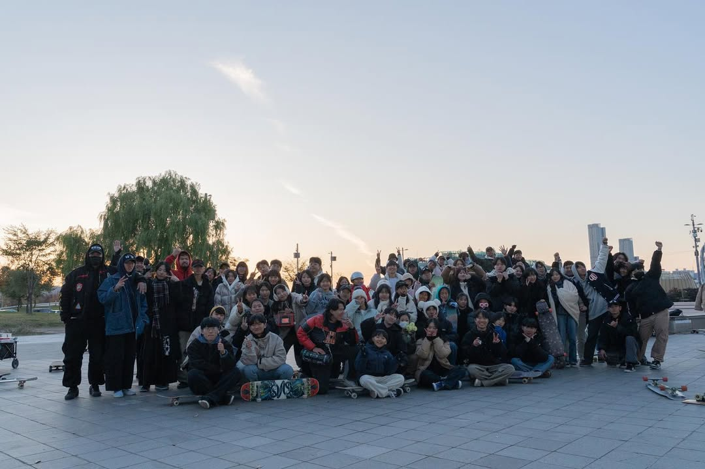
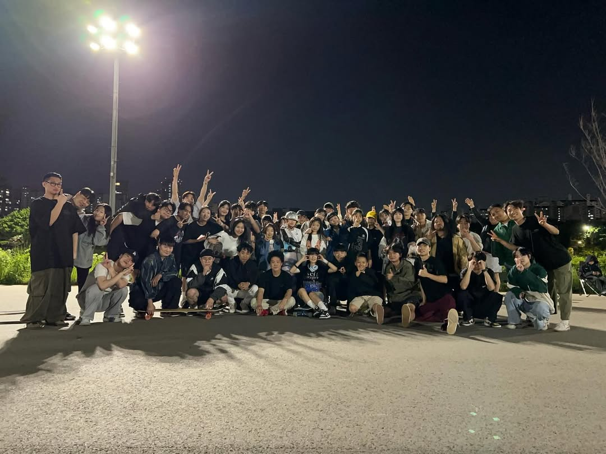
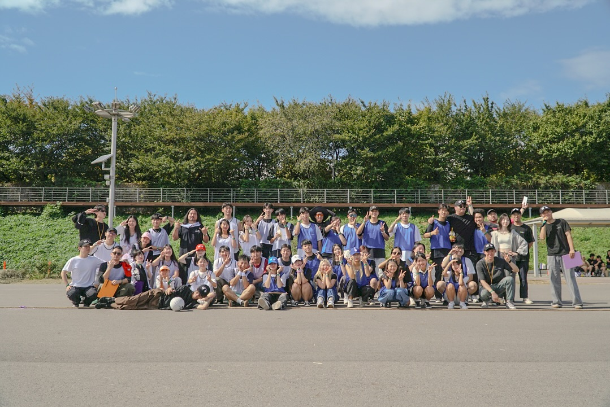
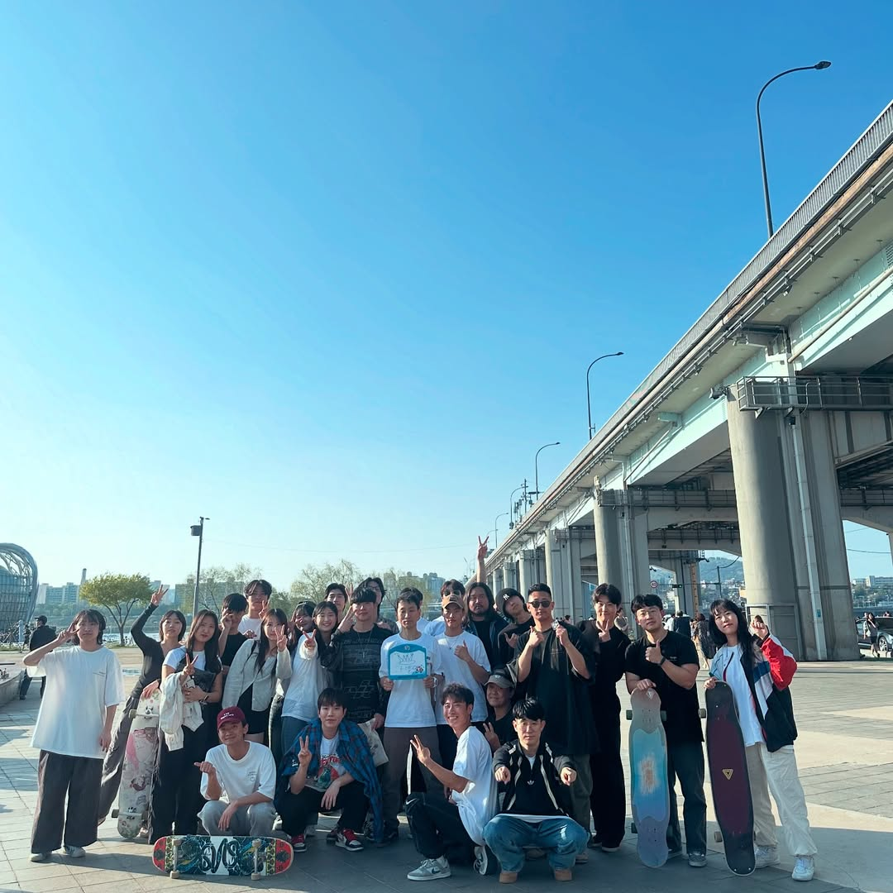
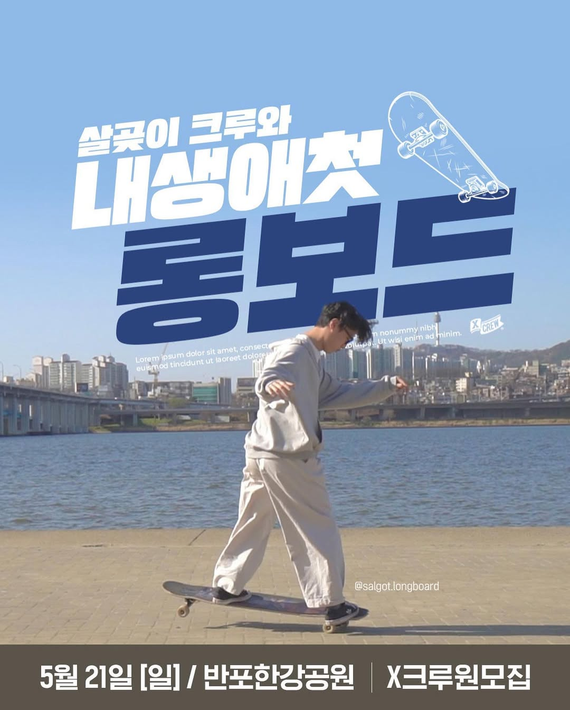

롱보드 팀 살곶 롱보드
살곶이팀 이란?
전국 각 샵에서 스폰을 받으며 대외활동 중인 남자들이 모인 팀으로,
롱보드의 문화와 기술 발전을 위해 함께하고 있습니다.

살곶이팀 활동
23년 11월 11일: 반포 달빛광장 살곶이 이벤트 (프리스타일 / 미니게임)

24년 4월 27일: 오금교 인라인장 살곶이 프리 토너먼트

24년 9월 28일: 오금교 인라인장 롱보더 운동회

25년 4월 일: 반포 달빛광장 살곶이 파이트 클럽

23년 5~6월: XCREW 플랫폼과 함께하는 보드 입문 강습

살곶이 팀원
장석환 활동 이력 (트레브롤 브랜드 라이더)
바로가기
23년 롱보드코리아 주최 롱보드페스티벌 비스폰 베스트트릭 1위
24년 롱보드코리아 주최 롱보드페스티벌 비스폰 베스트댄싱 1위
24년 롱보드코리아 주최 롱보드페스티벌 비스폰 프리스타일 1위
보드위키 엔터팀 운영 리더
팀 롱보드 살곶이팀 운영 중
JBL XCREW 광고 모델 촬영
Go Out 잡지 인터뷰
석유진 활동 이력 (원러브 보드샵, 마주쯔 브랜드 라이더)
바로가기
유튜브 롱보드 유지 채널 운영
17년 중국 SYCLD 스폰서부 파이널 진출
17년 제2회 부산 시그니처 보드페스티벌 심사위원
17년 제8회 롱보드페스티벌 스폰서부 1위
18년 유럽 SYCLD 스폰서부 파이널 진출
19년 제6회 신촌 롱보드대축제 심사위원
19년 삼성 빅스비 광고 참여
19년 영화 《어른들은 몰라요》 참여
년도 폴햄 광고 참여
년도 모크 광고 참여
년도 네이버 스마트스토어 SME 광고 참여
21년 펄어비스 신작 《도깨비》 모션 참여
21년 후지필름 광고 참여
21년 KIA 올 뉴 스포티지 광고 참여
21년 Keen Pierce - 25 뮤직비디오 참여
21년 삼성화재 다이렉트 착 광고 참여
21년 삼성전자 ‘가전을 나답게’ 광고 참여
22년 왓챠 웹드라마 《시멘틱 에러》 참여
22년 제7회 신촌 롱보드대축제 심사위원
22년 MBN 뉴스 ‘세상돋보기 덕업일치’ 출연
22년 국립현대무용단 공연 《힙합》 참여
22년 한국직업방송 《취미로 먹고산다 시즌4》 4회 출연
22년 제11회 롱보드페스티벌 심사위원
23년 아프리카TV 《BJ취미동아리》 롱보드 강사 참여
23년 MBN 《생생정보마당》 출연
23년 제8회 일산 롱보드코리아 주최 롱보드대축제 심사위원
24년 제9회 서울 롱보드코리아 주최 롱보드대축제 심사위원
25년 제10회 서울 롱보드코리아 주최 롱보드대축제 심사위원
김형철 활동 이력 (디우스 브랜드/보드샵 라이더)
바로가기
(전) 허스타 보드샵 라이더
23년 대한민국 롱보드페스티벌 스폰서부 본선 진출
23년 대한민국 롱보드대축제 스폰서부 본선 진출
24년 대만 Supernovice 스폰서부 파이널 진출
24년 대한민국 롱보드페스티벌 스폰서부 본선 진출
25년 일본 오사카 LONGBOARD_SI 주최 대회 본선 진출
송철현 활동 이력 (롱보드 니샨 라이더)
바로가기
(전) 아바이브로스 보드샵 라이더
Jay B 《Go Up》 뮤직비디오 출연
아이콘 《딴따라》 뮤직비디오 출연
솜씨당 달수빈 롱보드 강사 출연
《동네 한 바퀴》 롱보드 강사 출연
허태한 활동 이력 (보드팩토리 보드샵 라이더)
바로가기
22년 롱보드코리아 주최 롱보드대축제 일반부 베스트댄싱 1위
22년 롱보드코리아 주최 롱보드페스티벌 일반부 프리스타일 3위
23년 롱보드코리아 주최 롱보드대축제 심사위원
23년 롱보드코리아 주최 롱보드페스티벌 심사위원
24년 롱보드코리아 주최 롱보드대축제 심사위원
24년 롱보드코리아 주최 롱보드페스티벌 오픈부 프리스타일 본선 진출
Go Out 아웃도어 스포츠 인터뷰 촬영
JBL XCREW 광고 모델 촬영
롱보드 팀 플로우 운영 중
이한빈 활동 이력
바로가기
16년 롱보드코리아 주최 롱보드페스티벌 프리스타일 남자 일반부 2위
17년 롱보드코리아 주최 롱보드페스티벌 프리스타일 남자 일반부 1위
19년 롱보드코리아 주최 롱보드대축제 남자 일반부 프리스타일 1위
22년 롱보드코리아 주최 롱보드대축제 남자 스폰서부 프리스타일 2위
22년 롱보드코리아 주최 롱보드페스티벌 남자 스폰서부 프리스타일 2위
24년 대만 Supernovice 남자 스폰서부 프리스타일 1위
롱보드코리아 주최 롱보드대축제, 롱보드 페스티벌 심사위원
정다훈 활동 이력
바로가기
전 류브로 보드샵 라이더
21년 인터넷 방송 BJ 및 유튜버 쏘대장 일일 강사 출현
송청현 활동 이력
바로가기
16년: 燃烧冰温泉山 남자 프리스타일 1위
18년: 霸州 롱보드 활동 팀 Skate 1위
18년: 天津 School 샵 기념 팀 Skate 1위 / 개인 Skate 1위
18년: 金华 Old School 크루 남자 스폰서 Dancing 2위
18년: 중국 Flatground Freestyle(平花) 챌린지 Best Line 1위, No Comply 타임어택 1위, 남자 챔피언 ‘平底之王’ (Flatground King)
19년 3월 2일: JSK 기념 행사 팀 Skate 1위
베이징 EP 롱보드 샵 정기전 1위
베이징시 롱보드 위원회 평지 챌린지 대회 청도 예선 스폰서부 준우승
중국 최초의 롱보드 고급 코치 1기
신재홍 활동 이력 (고릴라 보드샵 라이더)
바로가기
김포 프로그 크루 운영 중
박민혁 활동 이력
전 칼리파 보드샵 라이더
나형권 활동 이력 (고릴라 보드샵 소속)
바로가기
롱보드 유튜브 상자보드(2.8만) 운영중
스포츠 헉원, 숨고, 프립 강사 활동 4년
24년 롱보드코리아 주최 롱보드 페스티벌 프리스타일 스폰부 본선 진출
25년 롱보드 코리아 주최 롱보드 대축제 프리스타일 스폰부 본선 진출
분당 지역 휠러즈 크루 부크루장 활동
손상민 활동 이력 (a.k.a 보드샵, 트레브롤 브랜드 라이더)
바로가기
19년 롱보드코리아 주최 롱보드 대축제 스폰부 Best Trick 수상
19년 롱보드코리아 주최 롱보드 페스티벌 스폰부 Best Trick 수상
정지원 활동 이력 (푸쉬오프 보드샵/에어트럭 소속)
바로가기
18년 롱보드코리아 주최 롱보드 대축제 2위
19년 세계 SYCLD Non Sponsered 1위
19년 롱보드코리아 주최 롱보드 페스티벌스폰부 3위
19년 일산 Festival Open 1위
19년 수원 The Next Level - Best hand Trick 수상
24년 롱보드코리아 주최 롱보드 페스티벌스폰부 3위
25년 롱보드코리아 주최 롱보드 페스티벌스폰부
이은석 활동 이력 (디우스 브랜드 라이더)
바로가기
상록 청소년 수련관 롱보드 강사
만안 청소년 수련관 롱보드 강사
동안 청소년 수련관 롱보드 강사
2024 청소년 롱보드 페스티벌 심사
AKA-G x WAY-B 타보랑께 베스트트릭 심사
2020 NEXT LEVEL 대회 1위
롱보드 대축제 9회 히피점프 1위
AKA-G x WAY-B 타보랑께 베스트핸드트릭 1위
호무라 필름 운영(익스트림 필르밍 팀)
박경민 활동 이력 (디우스 브랜드 라이더)
바로가기
청소년 수련관 롱보드 강사
이동현 활동 이력
바로가기
22년 롱보드코리아 주최 롱보드 대축제 일반부 베스트트릭 우승
23년 롱보드코리아 주최 롱보드 대축제 일반부 프리 3등
23년 롱보드코리아 주최 롱보드 페스티 일반부 프리 2등
24년 롱보드코리아 주최 롱보드 대축제 일반부 프리 2등
피형우 활동 이력 (디우스 브랜드, 보드팩토리 보드샵 소속)
바로가기
22년 수원 AKA NEXTLEVEL 우승
25년 만안 청소년 수련관 롱보드 강사